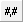
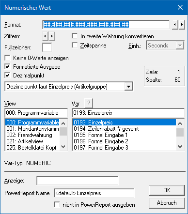

Ø

Numerische VariableNumerische Variablen ermöglichen den Andruck von Variablen, in denen eine Zahl (z.B. ein Einzelpreis) gespeichert sind. Hierfür stehen unterschiedlichste Formatierungen zur Verfügung.
Eigenschaftsfenster "Numerischer Wert"
Über das Eigenschaftsfenster "Numerischer Wert" können unterschiedlichste Einstellungen für eine Numerische Variable vorgenommen werden.

Ø Format
Bestimmt das Darstellungsformat der Variable im Ausdruck. Mit den Buttons kann die Position des Trennzeichens (Komma) verändert werden.
ü # - Raute
Die Raute stellt im
Format den Platzhalter für eine Zahl dar. Wenn die auszugebende Zahl größer als
das definierte Format ist (Stellen vor dem Dezimalpunkt, d.h. dem Komma) dann
werden bei der Ausgabe nur Rauten angezeigt.
ü , - Komma
Das Komma stellt im
Format das Formatierungstrennzeichen dar. Bei der Ausgabe eines Formulars wird
dieses als "Punkt" dargestellt.
Hinweis
Damit die Formatierung ausgedruckt wird muss die Option "Formatierte Ausgabe" aktiviert werden.
ü . - Punkt
Der Punkt stellt im
Format das Dezimaltrennzeichen für die Nachkommastellen dar. Bei der Ausgabe
eines Formulars wird dieser als "Komma" dargestellt.
Hinweis
Ob die Nachkommastellen gemäß dem Format oder dynamisch ermittelt werden sollen wird in der Option "Dezimalpunkt" definiert.
Ø Ziffern
Mit Hilfe der Buttons kann die Anzahl der Stellen (Rauten im Format) definiert werden, welche gedruckt werden sollen. Grundsätzlich ist dabei zu beachten, dass immer die Anzahl der gewünschten Stellen + 1 zusätzliche Stelle vorhanden sein sollte.
Beispiel
Es soll der Summenrabatt angedruckt werden, wobei dieser im Normalfall nur 2 Stellen lang ist. Wenn man aber berücksichtigt, dass noch ein Vorzeichen dazukommt, müssen mindestens 3 Stellen in der Formatierung vorhanden sein.
Ø Füllzeichen
Auswahl eines Füllzeichens für die Ausgabe. Abhängig von der Anzahl der anzudruckenden Zeichen (einzustellen bei der Option "Ziffern" bzw. direkt im Format) und des angedruckten Wertes wird das Feld mit dem hinterlegten Zeichen aufgefüllt.
Beispiel
Für eine Dateiausgabe werden die Zahlen immer mit 10 Zeichen benötigt. Aus diesem Grund wurde das Format auf "##########" gestellt. Durch die Eingabe eines Füllzeichens, z.B. "*", erfolgt die Ausgabe nun immer 10stellig, d.h. aus der Zahl 123456 wird ****123456.
Ø In zweite Währung konvertieren
Ist diese Checkbox aktiviert, wird der Wert in die zweite Währung, welche im Mandantenstamm hinterlegt ist (Register "Stamm", Feld "Landeswährung 2"), umgerechnet. Damit können alle Werte in beiden verwendeten Währungen angedruckt werden.
Ø Zeitspanne
Diese Option rechnet einen Wert in eine Zeitangabe um. Diese Option kann nur bei speziellen Datenfeldern (z.B. in der Produktion) verwendet werden.
Ø Einh.
Aus der Auswahlliste kann die Zeiteinheit für die Zeitspanne (siehe Feld "Zeitspanne") definiert werden.
Ø Keine 0-Werte anzeigen
Bei aktivierter Option wird der Andruck von Null-Werten verhindert.
Ø Formatierte Ausgabe
Bei aktivierter Option wird die Variable mit dem im Eingabefeld "Format" definierten Formatierungstrennzeichen angedruckt.
Ø Dezimalpunkt
Bei aktivierter Option wird die Variable mit einem Dezimalpunkt (Dezimaltrennzeichen für die Nachkommastellen) angedruckt.
Zusätzlich kann entschieden werden, wie die Nachkommastellen angedruckt werden sollen. Dabei gibt es folgende Optionen:
ü Dezimalpunktposition wie in Format
angegeben
Mit dieser Einstellung wird die Zahl gemäß den Einstellungen im
Feld "Format" ausgegeben.
ü Dezimalpunkt laut Menge 1
(Artikelgruppe)
Mit dieser Einstellung wird der Dezimalpunkt so gesetzt,
damit die Anzahl der Nachkommastellen lt. Einstellung der Artikelgruppe (für
Menge 1) angedruckt werden können. Wenn in der Artikelgruppe in der Menge 1 null
Nachkommastellen hinterlegt sind, gibt es keine Nachkommastellen; sind in der
Artikelgruppe 4 Nachkommastellen hinterlegt, so werden auch 4 Nachkommastellen
angedruckt.
ü Dezimalpunkt laut Menge 2
(Artikelgruppe)
Mit dieser Einstellung wird der Dezimalpunkt so gesetzt,
damit die Anzahl der Nachkommastellen lt. Einstellung der Artikelgruppe (für
Menge 2) angedruckt werden können. Wenn in der Artikelgruppe in der Menge 2 null
Nachkommastellen hinterlegt sind, gibt es keine Nachkommastellen; sind in der
Artikelgruppe 4 Nachkommastellen hinterlegt, so werden auch 4 Nachkommastellen
angedruckt.
ü Dezimalpunkt laut Einzelpreis
(Artikelgruppe)
Mit dieser Einstellung wird der Dezimalpunkt so gesetzt,
damit die Anzahl der Nachkommastellen lt. Einstellung der Artikelgruppe für
Preisnachkommastellen (max. 6) angedruckt werden können. Sind in der
Artikelgruppe 3 Preisnachkommastellen hinterlegt, so werden mit dieser
Einstellung auch 3 Nachkommastellen gedruckt.
ü Dezimalpunkt laut Gesamtpreis
(Mandantenstamm)
Mit dieser Einstellung wird der Dezimalpunkt so gesetzt,
damit die Anzahl der Nachkommastellen lt. Einstellung im Mandantenstamm gedruckt
werden können.
Ø View / Var
Über die Auswahllisten kann die View (d.h. die SQL-Tabelle)
und die Variable (d.h. die SQL-Spalte in einer Tabelle) bestimmt werden, welche
ausgegeben werden soll. Mit Hilfe des Icons  kann das Fenster "Variable suchen"
geöffnet werden. In diesem ist es möglich per Volltextsuche nach Variablen zu
suchen.
kann das Fenster "Variable suchen"
geöffnet werden. In diesem ist es möglich per Volltextsuche nach Variablen zu
suchen.
Hinweis
Weitere Information entnehmen Sie bitte dem Kapitel Einfügen von Variablen.
Ø Anzeige
Im Eingabefeld "Anzeige" können Informationen im Klartext hinterlegen werden um das Formular besser lesbar zu machen. Statt der Variablen wird der hier eingetragene Text auf dem Bildschirm angezeigt. Der Eintrag hat aber keinerlei Auswirkungen auf den Andruck der Variablen und wird nach dem Schließen des WinLine Formular Editors gelöscht (ist beim nächsten Aufruf nicht mehr sichtbar).
Ø PowerReport Name
An dieser Stelle kann der Name für die Anzeige innerhalb des Power Reports angepasst werden. Im Standard wird der Name der Variable übergeben.
Ø nicht in PowerReport ausgegeben
Mit Hilfe dieser Checkbox definiert werden, ob die Daten der Variable im Power Report zur Verfügung stehen sollen oder nicht.
Hinweis
Grundsätzlich werden nur Variablen aus dem Mittelteilsbereich an den Power Report übergeben.